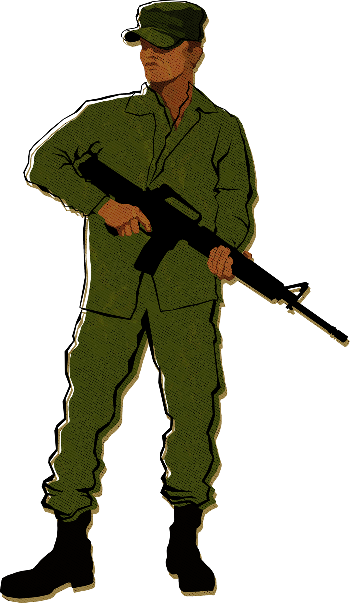
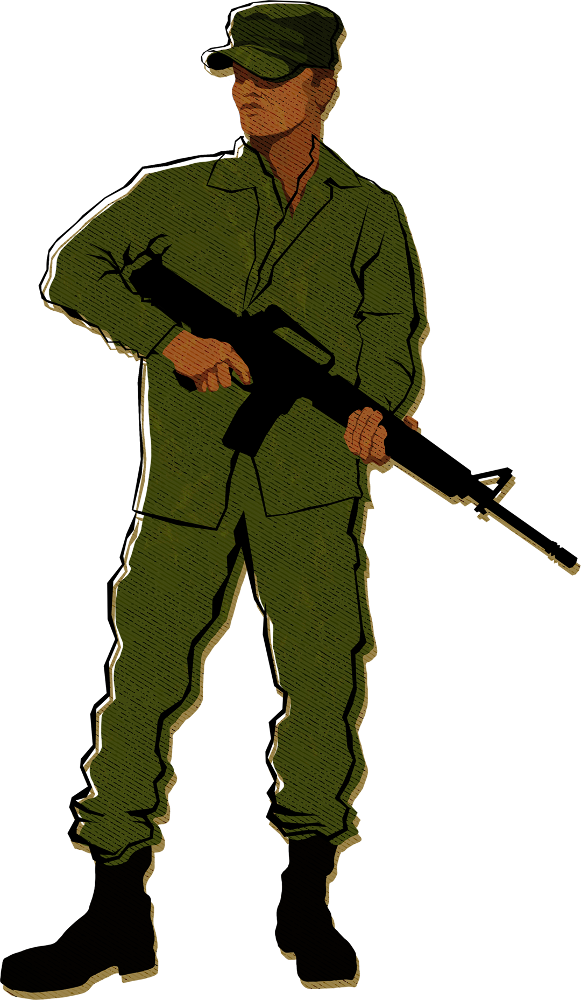

Together with a team of 32 journalists and media professionals from 12 countries, we ventured into rarely explored corners of the Amazon to understand its criminal ecosystem.
We spent one year investigating this intricate scenario and gaining insights into the driving forces that lead the protagonists of the Amazon Underworld to embark on devastating pursuits, forever reshaping the face of the jungle.
The investigation followed two parallel paths: in a quantitative track, we built a database to map the presence of organized crime groups on the country borders. In a narrative track, we travelled to different corners of the Amazon, to better understand how the crime domain intensely affects the social fabric and damages the environment.
ORGANIZED CRIME AND ARMED GROUPS
To build this database, we consulted primary sources and documents in all the border municipalities of Brazil, Colombia, Venezuela, Peru, Ecuador and Bolivia.